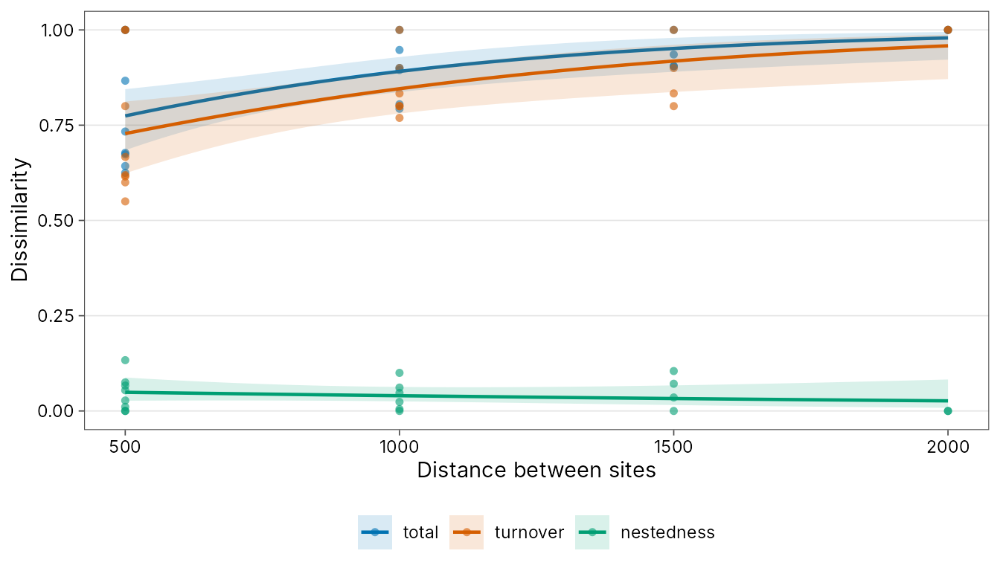
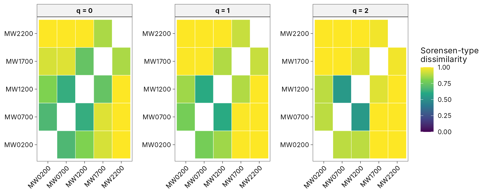

library(tidydiversity)
library(dplyr)
#>
#> Attaching package: 'dplyr'
#> The following objects are masked from 'package:stats':
#>
#> filter, lag
#> The following objects are masked from 'package:base':
#>
#> intersect, setdiff, setequal, union
library(ggplot2)Beta diversity measures how communities differ. Baselga (2010) showed
that dissimilarity has two parts: turnover, where
species replace each other, and nestedness, where
poorer sites hold a subset of the species at richer sites. The examples
use png_ants, ants at nutrient baits along Mt Wilhelm,
Papua New Guinea (Moses et al. 2023).
Pairwise dissimilarity
pairs <- beta_pair(png_ants, .by = season)
pairs
#> # A tibble: 20 × 6
#> season site_1 site_2 turnover nestedness total
#> <chr> <chr> <chr> <dbl> <dbl> <dbl>
#> 1 dry MW0200 MW0700 0.667 0.0108 0.677
#> 2 dry MW0200 MW1200 0.769 0.0239 0.793
#> 3 dry MW0200 MW1700 0.8 0.105 0.905
#> 4 dry MW0200 MW2200 1 0 1
#> 5 dry MW0700 MW1200 0.615 0.0275 0.643
#> 6 dry MW0700 MW1700 0.8 0.1 0.9
#> 7 dry MW0700 MW2200 0.833 0.0714 0.905
#> 8 dry MW1200 MW1700 1 0 1
#> 9 dry MW1200 MW2200 0.833 0.0614 0.895
#> 10 dry MW1700 MW2200 1 0 1
#> 11 wet MW0200 MW0700 0.619 0.0544 0.673
#> 12 wet MW0200 MW1200 0.8 0.00488 0.805
#> 13 wet MW0200 MW1700 0.9 0.0355 0.935
#> 14 wet MW0200 MW2200 1 0 1
#> 15 wet MW0700 MW1200 0.55 0.075 0.625
#> 16 wet MW0700 MW1700 0.9 0.0474 0.947
#> 17 wet MW0700 MW2200 1 0 1
#> 18 wet MW1200 MW1700 0.6 0.133 0.733
#> 19 wet MW1200 MW2200 1 0 1
#> 20 wet MW1700 MW2200 0.8 0.0667 0.867Turnover and nestedness add up to the total. Use
index = "jaccard" for the Jaccard family. The results match
the betapart package.
Many sites at once
beta_multi(png_ants, .by = season)
#> # A tibble: 2 × 5
#> season n_sites turnover nestedness total
#> <chr> <int> <dbl> <dbl> <dbl>
#> 1 dry 5 0.827 0.0507 0.877
#> 2 wet 5 0.790 0.0737 0.864Distance decay
beta_decay() adds the distance between sites along a
gradient. Here turnover rises with elevational distance while nestedness
stays low.
decay <- beta_decay(png_ants, gradient = elevation, .by = season)
decay
#> # A tibble: 20 × 9
#> season site_1 site_2 turnover nestedness total gradient_1 gradient_2 distance
#> <chr> <chr> <chr> <dbl> <dbl> <dbl> <int> <int> <dbl>
#> 1 dry MW0200 MW0700 0.667 0.0108 0.677 200 700 500
#> 2 dry MW0200 MW1200 0.769 0.0239 0.793 200 1200 1000
#> 3 dry MW0200 MW1700 0.8 0.105 0.905 200 1700 1500
#> 4 dry MW0200 MW2200 1 0 1 200 2200 2000
#> 5 dry MW0700 MW1200 0.615 0.0275 0.643 700 1200 500
#> 6 dry MW0700 MW1700 0.8 0.1 0.9 700 1700 1000
#> 7 dry MW0700 MW2200 0.833 0.0714 0.905 700 2200 1500
#> 8 dry MW1200 MW1700 1 0 1 1200 1700 500
#> 9 dry MW1200 MW2200 0.833 0.0614 0.895 1200 2200 1000
#> 10 dry MW1700 MW2200 1 0 1 1700 2200 500
#> 11 wet MW0200 MW0700 0.619 0.0544 0.673 200 700 500
#> 12 wet MW0200 MW1200 0.8 0.00488 0.805 200 1200 1000
#> 13 wet MW0200 MW1700 0.9 0.0355 0.935 200 1700 1500
#> 14 wet MW0200 MW2200 1 0 1 200 2200 2000
#> 15 wet MW0700 MW1200 0.55 0.075 0.625 700 1200 500
#> 16 wet MW0700 MW1700 0.9 0.0474 0.947 700 1700 1000
#> 17 wet MW0700 MW2200 1 0 1 700 2200 1500
#> 18 wet MW1200 MW1700 0.6 0.133 0.733 1200 1700 500
#> 19 wet MW1200 MW2200 1 0 1 1200 2200 1000
#> 20 wet MW1700 MW2200 0.8 0.0667 0.867 1700 2200 500
autoplot(decay)
beta_decay_model() fits a distance-decay curve to the
similarities (one minus dissimilarity) and tests it. The exponential
model S = a exp(-b d) gives the similarity a between sites
at the same elevation and the rate b;
half_distance is the elevational distance over which
similarity halves. Pairs of sites share sites, so they are not
independent: the p-value comes from permuting site labels, as in a
Mantel test, and refitting the model each time.
set.seed(1)
beta_decay_model(decay, permutations = 999)
#> # A tibble: 2 × 10
#> season model component n_pairs a b half_distance pseudo_r2 aic
#> <chr> <chr> <chr> <int> <dbl> <dbl> <dbl> <dbl> <dbl>
#> 1 dry exponen… total 10 0.257 7.50e-4 924. 0.143 -9.21
#> 2 wet exponen… total 10 0.897 2.36e-3 293. 0.694 -17.6
#> # ℹ 1 more variable: p.value <dbl>With only five sites per season there are 120 distinct permutations, so the smallest attainable p-value is near 0.01 however strong the pattern.
Hill-number dissimilarity between pairs of sites
Presence-absence indices treat a species with one worker like one
with a thousand. beta_hill_pair() computes the Hill-number
framework of Chao, Chiu and Jost (2014) for every pair of sites, so the
order q sets how much weight common species get. At q = 0
dis_sorensen and dis_jaccard are the classic
Sorensen and Jaccard indices; at q = 2 dis_sorensen is the
Morisita-Horn index, driven by the dominant species.
wet <- dplyr::filter(png_ants, season == "wet")
hp <- beta_hill_pair(wet, abundance = workers)
hp
#> # A tibble: 30 × 10
#> site_1 site_2 q gamma alpha beta dis_sorensen dis_jaccard
#> <chr> <chr> <dbl> <dbl> <dbl> <dbl> <dbl> <dbl>
#> 1 MW0200 MW0700 0 41 24.5 1.67 0.673 0.805
#> 2 MW0200 MW1200 0 37 20.5 1.80 0.805 0.892
#> 3 MW0200 MW1700 0 30 15.5 1.94 0.935 0.967
#> 4 MW0200 MW2200 0 26 13 2 1 1
#> 5 MW0700 MW1200 0 39 24 1.62 0.625 0.769
#> 6 MW0700 MW1700 0 37 19 1.95 0.947 0.973
#> 7 MW0700 MW2200 0 33 16.5 2 1 1
#> 8 MW1200 MW1700 0 26 15 1.73 0.733 0.846
#> 9 MW1200 MW2200 0 25 12.5 2 1 1
#> 10 MW1700 MW2200 0 14 7.5 1.87 0.867 0.929
#> # ℹ 20 more rows
#> # ℹ 2 more variables: dis_turnover_sorensen <dbl>, dis_turnover_jaccard <dbl>
autoplot(hp)
beta_dist() turns one order into a distance matrix for
ordination, clustering or PERMANOVA:
beta_dist(hp, q = 2)
#> MW0200 MW0700 MW1200 MW1700
#> MW0700 0.8931865
#> MW1200 0.8934988 0.5378074
#> MW1700 0.9999783 0.9999473 0.9493274
#> MW2200 1.0000000 1.0000000 1.0000000 0.9811531Beta diversity at equal sample coverage
Beta diversity estimated from samples depends on sample size and
completeness, so regions sampled with different effort cannot be
compared directly. beta_hill() follows the iNEXT.beta3D
framework of Chao et al. (2023): gamma and alpha Hill numbers are each
standardised to the same sample coverage, and beta = gamma / alpha is
the effective number of completely distinct sites (1 to the number of
sites).
beta_hill(png_ants, .by = season)
#> # A tibble: 6 × 13
#> season q coverage m_gamma m_alpha gamma alpha beta n_sites dis_sorensen
#> <chr> <dbl> <dbl> <dbl> <dbl> <dbl> <dbl> <dbl> <int> <dbl>
#> 1 dry 0 0.957 238. 371. 50.3 16.2 3.10 5 0.526
#> 2 dry 1 0.957 238. 371. 34.1 10.9 3.12 5 0.708
#> 3 dry 2 0.957 238. 371. 24.7 7.32 3.37 5 0.879
#> 4 wet 0 0.957 480 807. 78.9 27.9 2.83 5 0.457
#> 5 wet 1 0.957 480 807. 39.4 13.6 2.89 5 0.659
#> 6 wet 2 0.957 480 807. 22.2 7.29 3.04 5 0.839
#> # ℹ 3 more variables: dis_jaccard <dbl>, dis_turnover_sorensen <dbl>,
#> # dis_turnover_jaccard <dbl>The four dis_ columns rescale beta to 0-1.
dis_sorensen and dis_jaccard measure
non-overlap (for q = 0 they are the classic Sorensen and Jaccard
dissimilarities); the turnover versions measure species
turnover. Give coverage to compare regions at chosen
levels:
beta_hill(png_ants, q = 0, coverage = c(0.8, 0.9), .by = season)
#> # A tibble: 4 × 13
#> season q coverage m_gamma m_alpha gamma alpha beta n_sites dis_sorensen
#> <chr> <dbl> <dbl> <dbl> <dbl> <dbl> <dbl> <dbl> <int> <dbl>
#> 1 dry 0 0.8 81.9 140. 34.5 11.5 3.01 5 0.503
#> 2 dry 0 0.9 150. 244. 44.4 14.5 3.06 5 0.516
#> 3 wet 0 0.8 112. 216. 43.3 15.9 2.73 5 0.433
#> 4 wet 0 0.9 260. 481. 64.1 23.5 2.73 5 0.431
#> # ℹ 3 more variables: dis_jaccard <dbl>, dis_turnover_sorensen <dbl>,
#> # dis_turnover_jaccard <dbl>Add nboot for bootstrap confidence intervals. The same
function gives phylogenetic (type = "PD", with
tree) and functional (type = "FD", with
distance) beta diversity, and works on incidence data with
unit when the same sampling units (plots, visits) were
surveyed at every site.
set.seed(1)
b <- beta_hill(png_ants, q = 0, coverage = 0.9, nboot = 20, .by = season)
b[c("season", "beta", "beta_lower", "beta_upper")]
#> # A tibble: 2 × 4
#> season beta beta_lower beta_upper
#> <chr> <dbl> <dbl> <dbl>
#> 1 dry 3.06 2.56 3.57
#> 2 wet 2.73 1.97 3.48Chao, A. et al. (2023). Rarefaction and extrapolation with beta diversity under a framework of Hill numbers: the iNEXT.beta3D standardization. Ecological Monographs, 93, e1588.